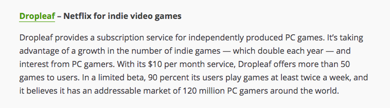

Goals
We chose to redesign Dropleaf’s client because there were inconsistencies between how they marketed themselves and their goals and what their desktop client actually achieved. They claimed to be a “Netflix for indie video games” but did not have the services associated with Netflix, such as easy discoverability, availability on all platforms, and an intuitive and user friendly interface.
Here's an excerpt from TechCrunch on Dropleaf:

Sketches
Each sketch represents a way in which a user would download a game through Dropleaf.
Search by Category
One of the ways a game can be downloaded is by accessing the categories page. From here, the user can browse similar games and decide which one they would like to download. From there, they can also access a details page for each game, as well as similar games.
Home Page
Another way which a user can find games is through their home page. The home page is different from the categories page because it sorts what games are seen differently. There is a “Recommended for You,” “New Releases,” and “Top Rated.” Each of these categories is constantly changing based off of the user’s download history, updated ratings, and new releases. Each is optimized to give exposure to games the user might not otherwise find to fulfill Dropleaf’s goal.
Search Page
This shows the path a user would take to download a game from the games page after running a search. Once the user has clicked on a game in the games list, they are directed to a page displaying and describing the game’s contents. The download button is positioned under the title, but not so far down that the user would need to scroll to see it. The game’s title, box art, and any media (e.g. the playable video at the top) are first since first-time users will want to see the game in action before considering downloading it.
Hover Events
Users can also find games by hovering over a game’s thumbnail after running a search. When searching for games to download, users may not want to spend additional time going back and forth between game pages and the game list, preferring instead to download many games they may want to play later. Once a user hovers, a download button will slide up from the bottom of the thumbnail, disappearing when the user stops hovering. To minimize accidental UI responses from random mouse movement (e.g. the mouse happens to pass over a thumbnail on its way to the sidebar), a small delay should be put on the hover event animation.
Prototype
Our new design provides a consistent menu layout which makes navigation more streamlined. All major screens are accessible through the sidebar menu on the left. The sidebar serves as a point of return for lost users, and is never hidden or obstructed by other content. This feature also appears on similar platforms like Steam (which uses sidebars for game libraries and a top bar for general navigation). One major navigation feature in the sketches, downloading on hover rather than having to go to the game page, did not end up in the hi-fi prototype since it was underutilized: accidental hover actions are distracting, and most users would prefer to learn more about a game (i.e. go to the game page) before downloading.
In terms of aesthetics, we avoided the original product’s overuse of shadows/gradients and underutilization of color contrast. Shadows for the new design were limited to entities containing significant amounts of related content (e.g. a game in one’s library or game info on a game’s page) rather than for individual items (e.g. the sidebar on the original product which creates unnecessary visual noise). Colors are utilized for menu items, game genres, and interaction buttons so users can more easily remember the distinct functions of each menu. Download buttons, for instance, are always bright green and appear after (or, visually, to the right of) the game title.
The content of the sidebar was changed in the new design to reflect distinct use cases. For example, rather than having each organization method (e.g. top rated, popular, recommended, etc.) on the navigation menu, they all appear on the home page since they serve the same purpose of showing what’s trending. The games page is reserved for allowing the user to manually search based on their game preferences, so the first thing they see is genre (a very common way users show preference).
Below are Nielsen’s ten usability heuristics, which we talked about in lecture:
- Visibility of system status
- Match between system and the real world
- User control and freedom
- Consistency and standards
- Error prevention
- Recognition rather than recall
- Flexibility and efficiency of use
- Aesthetic and minimalist design
- Help users recognize, diagnose, and recover from errors
- Help and documentation
Our high fidelity prototype/desktop app conforms to 3, 4, 5, 6, 7, 8.
We offer the user complete freedom over what they can do in the desktop app and we also emulate the settings the original interface offers. Moreover, we follow a consistent color scheme and typography that allow for an aesthetic and minimalist design. Furthermore, the navigation allows for recognition rather than recall.
Home Page
The home page where we recommend games, show new releases, and also show top rated games. Users can click any of the game pictures and be instantly brought to the game details.
View Page
The view allows users to either search for any game in our system or select a game category. We then filter the games and show only relevant games that correspond to the category.

Settings Page
The settings page allows users to adjust basic settings. Right now there is not much to do on this screen.
Category Page
This page is the game category page that shows all the categories in arcade. If you click on a category such as action, for instance, we show only games tagged with action, and change the background color of the page to reflect the background colors on the game categories selection page.
Search Results
In this screen a user is searching for a specific game, and the list of games automatically updates to reflect the game that is being searched for.
Details Page
The game details page allows users to see more pictures and read more information about a given game. You can also download the game or add it (or remove it if you have already added it) from your library.
Library Page
The library page shows users all of the games they have in their library. They can then see details for the game, download the game, or remove the game from their library if they click on it to see the details.
Prototype Testing
Main Task
One of the main activities in Dropleaf is easy game discoverability. Our task entailed:
- Starting from the Home page, have the user find and click on the “Clustertruck” game (Task 10)
- Instruct the user to find a way to add that game to their library (Task 11)
- Finally, remove the “Clustertruck” game from your library (Task 12)
The goal of this task is to understand how users navigate inside of the application and how easy was it to find “Clustertruck” for a first-time user.
Hypothesis
The user will try to find the game from one of the reels in the Home page. If they are observant enough they will note “Clustertruck” being the first game in the top reel. We suppose users will click on the image of the game or the title in order to navigate to the games’ page (Task 10). Once inside the game page, we assume the user will find the “Add to library” button and click it (Task 11). For the final subtask we expect the user to go to the library page by clicking “Library” on the left sidebar. Following that we expect the user to click on the Clustertruck game card in order to navigate to its page and consequently click the “Remove from library” button.
Results
From the three user sessions we noticed that users performed Main Task #1 as we expected. However, there were some suggestions for changes. One of the users suggested adding the “Remove from library” button to the game cards that appear within the library. The user expressed the feeling of being “forced” to go to the game page in order to remove it from the library.
Aside for the main task, users performed other tasks as well during the test (search for “Mr. Shifty”, find the rating for “Hue me, baby!”, go to a competitor’s website and find something that Dropleaf is missing). One aspect users didn’t find clear was how the subscription model works in Dropleaf. Competitor applications (gog.com/JUMP) list the price of their service on the landing page.
Possible Changes
A common issue with our interface was that it lacked explanation of dropleaf’s pricing model. In order to fix this, we could easily add a page explaining the pricing and allowing users to pay or see how we price games. Additionally, on the categories page a common critique was that it had too many colors on it, so by putting saturated background images instead of colors we could improve the aesthetic of the page.
The testing experience information was extremely useful and unveiled new issues. For example, testers were often confused about the service's pricing model, not knowing whether it was pay-per-download or a subscription fee. Our searching also gave users issues as we directly compared substrings, so if a user typed in “Mr shifty” instead of “Mr. shifty” we did not register a match. In terms of the actual user testing, we could have been more specific in what our product was, as users were confused as to whether it was a web application or a desktop application. Also, some of our tasks were confusing, so giving more specific tasks would have allowed us to collect better data.
Reflecting on Testing
After testing we realized that we could have provided the testers with more information before the beginning of the test regarding the subscription model. Some concerns included uncertainty regarding the number of games a user could download. Moreover, we like how usertesting.com allows you as the person preparing the test to describe the mindset users should be in before the test starts. We think that doing this before certain tasks would have been helpful to clarify some confusion. One of the things that worked successfully was the specificity of our tasks. The user videos showed that testers remained very engaged and were able to accomplish tasks quickly because of this.
Email to Dropleaf

Back to Home